Guide
Everything about how Bobby Kids works: what each part is for, how the games are played and what every setting does. Bobby Kids is made for children aged 2 to 8, and every game is meant to be played by a child on their own, with a grown-up close by.
Getting started
After the title screen, Bobby Kids opens on the Home screen. Three big buttons lead to the three parts of the app:
- Learn: look at pictures and hear their names.
- Quiz: short challenges that check what was learned.
- Play: games for memory, logic and attention.
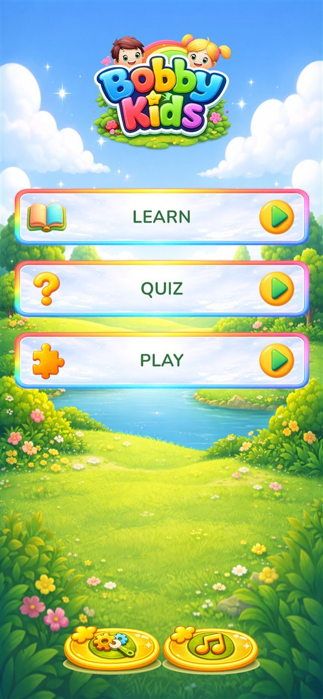
The buttons at the bottom of Home
- Settings button (on the left): opens Settings, but only after a grown-up answers a short sum. See Settings.
- Music button (right next to it): switches to the next song. Children love to press it, so you can hide it in Settings if you prefer. It is also hidden when the music volume is 0.
Moving around
Inside a menu or game, the buttons at the bottom take you Back one step or straight Home. In Quiz and Play your child first picks a game. Most games then ask for a topic, such as animals, fruits or vehicles, and All mixes every topic together.
Language
Bobby Kids speaks English and Bulgarian. All words, names and voices change with the language, which you choose in Settings. Hearing the same pictures in two languages is a gentle way to start a second language.
Learn
What it is for: first words, listening and naming everyday things.
Choose a topic, for example farm animals, fruits or musical instruments. A grid of big picture cards appears.
- Tap a card. It grows, turns and the name is spoken.
- Tap it again to put it away.
With Remove used cards switched on in Settings (the default), a card that has been looked at leaves the grid. When every card is gone, the grid fills up again, so your child can go round as many times as they like. The round arrow button at the bottom refills the grid at any time. Turn the setting off if you want the cards to always stay in place.
Tip: say the word together with the app, then ask "Where is the cow?" and let your child point.
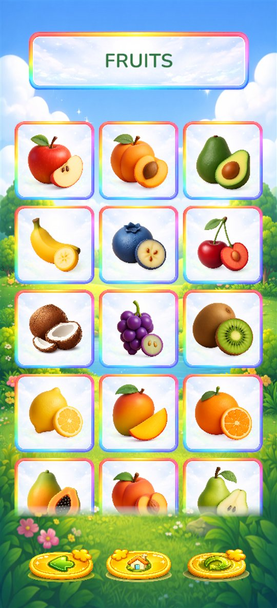
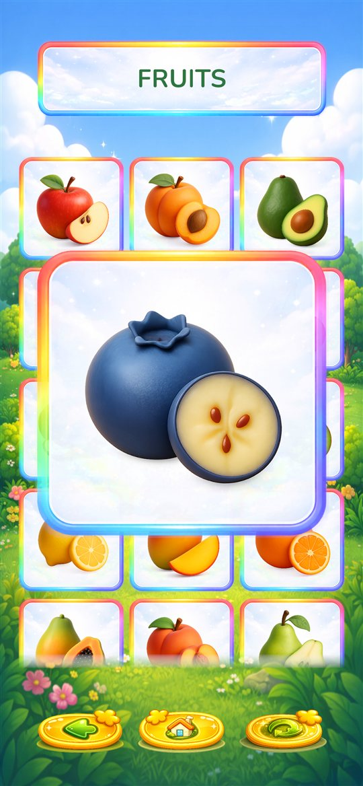
Quiz
Three short challenges that practise what was learned. Each one is played in levels: the first level is easy, and each next level adds a little more. See Levels and progress.
Find It
What it is for: recognising words by ear and linking a word to its picture.
The app says a name, for example "giraffe". Your child taps the matching picture. A correct answer glows and sounds happy. A wrong one wiggles, and your child can simply try again. The speaker button at the top says the name again. Higher levels show more pictures to choose from.
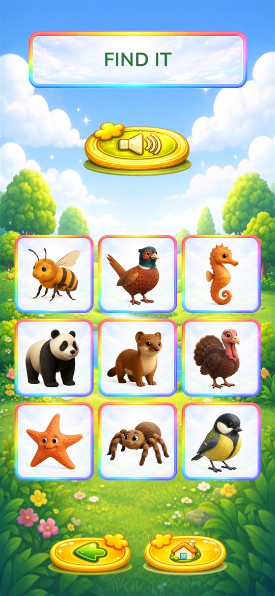
How Many?
What it is for: counting objects and recognising numbers.
Pictures are scattered on the screen and the app asks how many there are of one kind. Your child counts them and taps the right number below. The speaker button repeats the question. Higher levels add more pictures and more different kinds, so counting the right ones takes more attention.
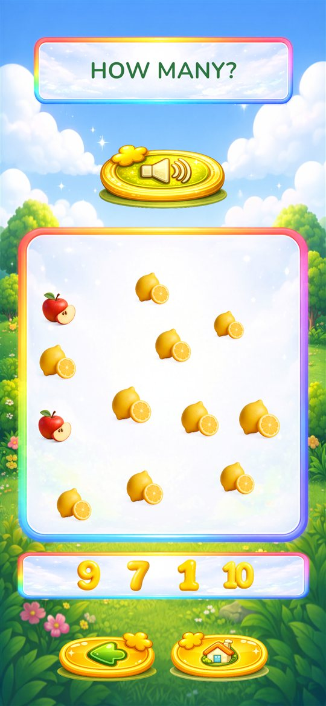
Count & Collect
What it is for: counting to a goal, matching and careful tapping.
At the top the app shows what to collect and how many of each. Your child taps the matching pictures on the screen, and each one jumps into its box at the bottom. When every box is full, the round is won. Tapping a picture that is not needed, or one too many, gives a gentle wiggle. Higher levels ask for more kinds and larger numbers.
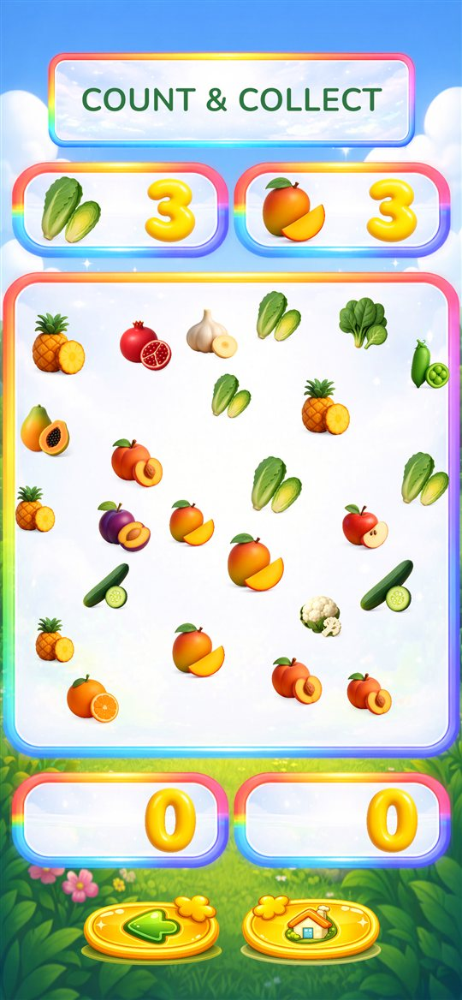
Play
Four games that train memory, logic and attention. Like the quizzes, they are played in levels.
Memory Game
What it is for: memory and concentration.
All cards lie face down. Your child turns two at a time, looking for pairs. A matching pair stays found. Two different cards stay open for a moment and then turn back. Higher levels have more cards.
Two settings change this game: Cards Reveal Time (how long two different cards stay open) and Remove matched cards (whether found pairs fly away or stay on the table, greyed out). See Settings.
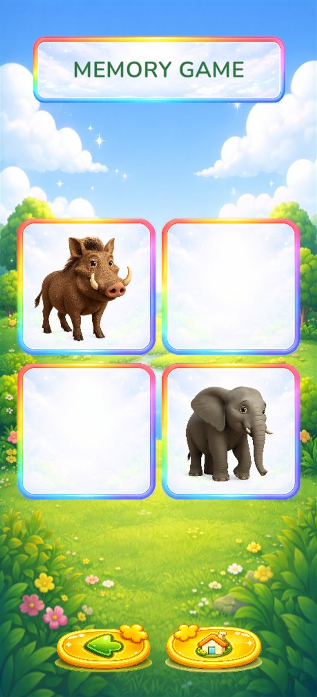
Sort Them
What it is for: sorting into groups, the first step of logical thinking.
Pictures from two or more groups are mixed together, for example vehicles and clothes. Your child drags each picture into the box where it belongs. A wrong box sends the picture back to try again. Higher levels have more pictures and more groups.
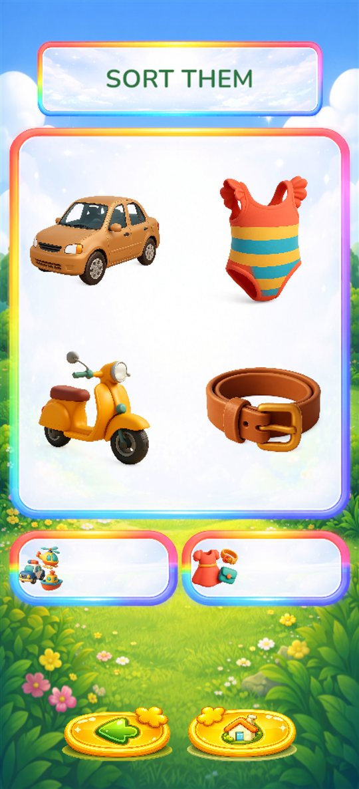
Match the Shadow
What it is for: looking closely at shapes and outlines.
Dark shadows are shown, and below them the coloured pictures. Your child drags each picture onto its shadow. Higher levels have more shadows and more pictures to choose from, including ones that do not fit.
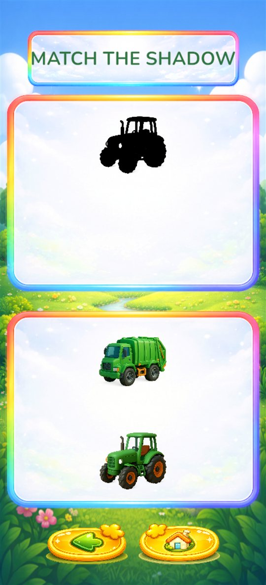
Where Is the Sun?
What it is for: following with the eyes, attention and patience.
The cards are shown face up for a moment: one of them has the sun, the others have rain clouds. Then they turn over and move around. When they stop, your child taps the card they think hides the sun. Higher levels have more cards that move faster and for longer.
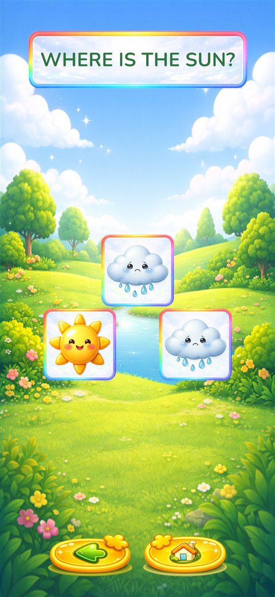
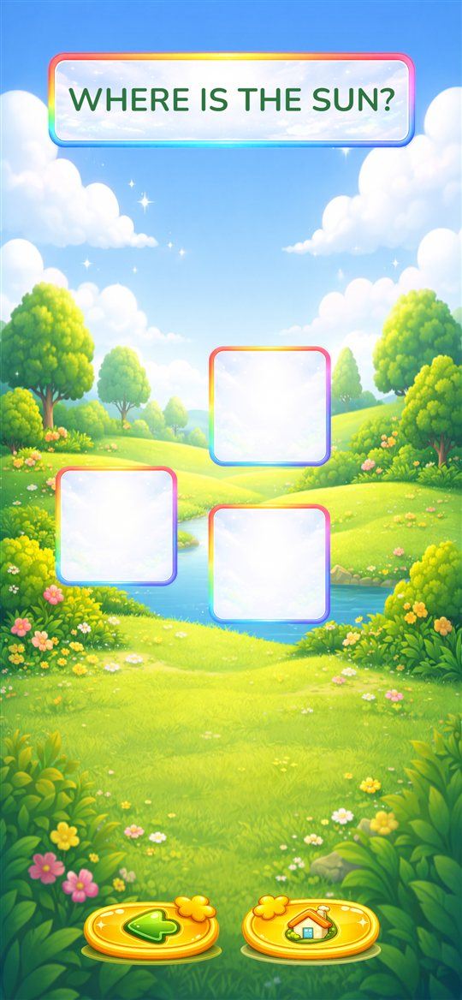
Levels and progress
Every quiz and game starts with the Pick a level panel. At first only level 1 is open. Your child chooses a level and presses play.
- A level is played a few times in a row with new pictures each time. How many times is set by Level Repeat Counts in Settings (3 by default).
- After the last round, sparkles and "Well done!" celebrate, and the next level opens.
- Open levels stay open. Your child can always go back to an easier one.
- Progress is saved only on this device. It is not shared between devices and it is removed if the app is uninstalled.
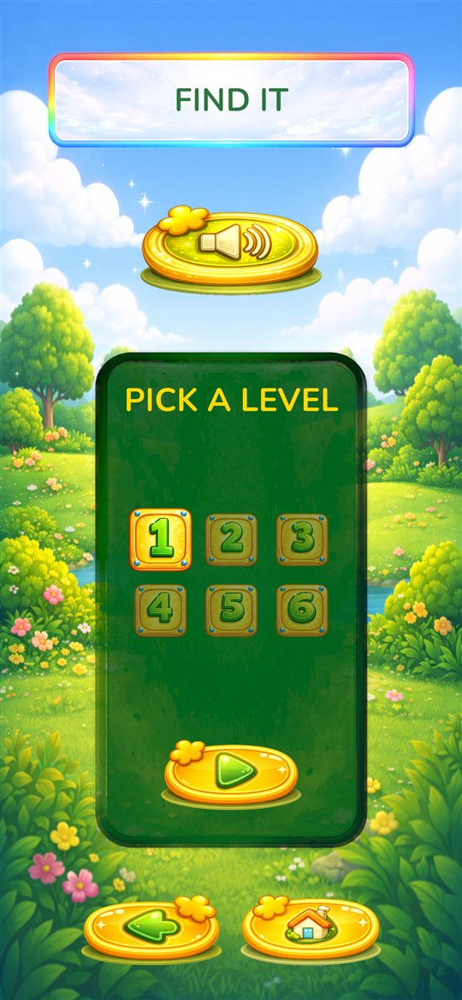
Settings
Tap the Settings button on the Home screen. A small sum appears under Ask a grown-up, for example "7 + 5 =". Type the answer and press the tick or Done key on the keyboard. A wrong answer shows a new sum. This parent check keeps small children out of Settings and away from purchases.
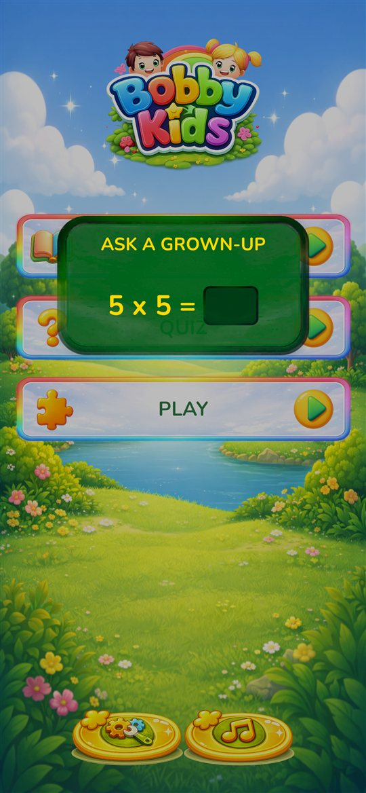
Settings is divided into sections. Tap a section's title to open it. Every change is saved straight away.
Full version
While you have the free version, this is the first section. It shows the Unlock and Restore purchase buttons and a link to the privacy policy. Once the full version is unlocked, the section moves to the end of Settings, because you will rarely need it again: only Restore purchase, for example on a new phone. See Full version.
General
- Language
- Tap the flag for English or Bulgarian. Changes all text and voices.
- Music
- Background music volume from 0 to 10 (default 5). At 0 the music is off and the Music button on Home is hidden. The volume of the spoken words is not affected: use the device's volume buttons for those.
- Song
- Each song has its own instrument picture on the slider. Choose one of five songs to play on repeat, or All (default) to play every song in a random order. The Music button on Home changes this same setting.
- Music button
- Shows or hides the Music button on the Home screen (on by default).
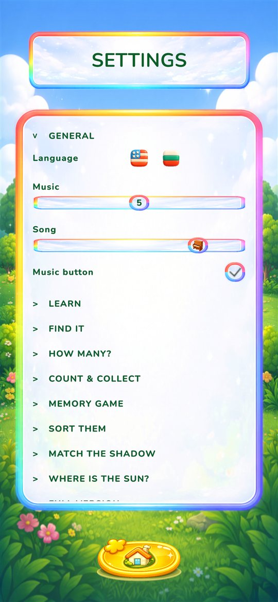
Learn
- Remove used cards
- On (default): a card that has been looked at leaves the grid, and the grid refills when it is empty. Off: cards always go back to their place. See Learn.
Quiz and Play games
Each game has its own section with two sliders:
- Max Level
- How many levels the game offers. By default every level is available. Lower it to keep a young child on the easier levels; the higher levels are then hidden, not deleted, and come back when you raise it.
- Level Repeat Counts before the next one
- How many rounds of a level must be finished before the next level opens, from 1 to 5 (default 3). More repeats mean more practice before it gets harder. 1 moves on after every round.
| Game | Max Level | Repeats |
|---|---|---|
| Find It | 1–6 | 1–5 |
| How Many? | 1–8 | 1–5 |
| Count & Collect | 1–6 | 1–5 |
| Memory Game | 1–7 | 1–5 |
| Sort Them | 1–7 | 1–5 |
| Match the Shadow | 1–6 | 1–5 |
| Where Is the Sun? | 1–7 | 1–5 |
The Memory Game section has two more settings:
- Cards Reveal Time
- How long two different cards stay open before turning back, from 1 to 3 seconds (default 1). Give younger children more time.
- Remove matched cards
- On (default): found pairs fly off the table, so fewer cards are left. Off: found pairs stay in place, greyed out, which makes the game a little harder.
Tip for a 2–3 year old: lower Max Level to 2 or 3 and keep the repeats at 3. For an older child who gets bored, set the repeats to 1.
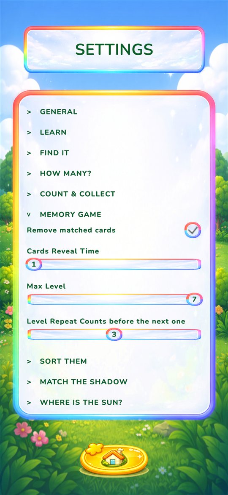
Full version
Bobby Kids is free to download. The free version includes farm and forest animals, fruits and vegetables, with Find It and Memory Game on these topics. The full version unlocks all 15 Learn topics, all 10 animal groups and all seven games. See the full comparison.
Locked items
Locked topics and games show a padlock. If your child taps one, they only see the message "Ask a grown-up to unlock it in Settings". No purchase screen opens, so a child cannot buy anything by accident.
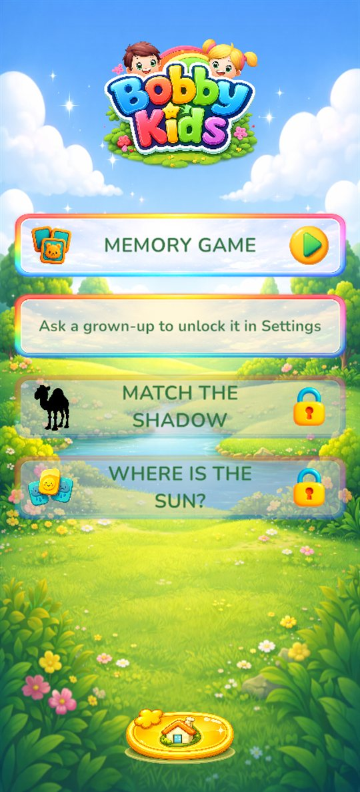
How to unlock
- On the Home screen, tap the Settings button and answer the sum.
- Open the Full version section at the top.
- Tap the Unlock button, which shows the price for your country, and confirm the payment in Google Play or the App Store.
- The message "Thank you! Everything is unlocked." appears, and everything opens straight away.
It is a one-time purchase: no subscription and no ads.
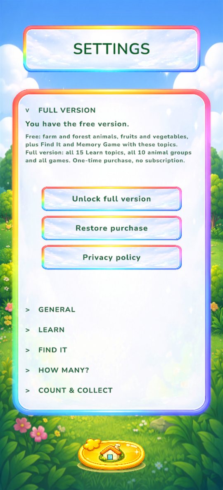
New phone or reinstalled app
Open Settings, go to Full version and tap Restore purchase. Use the same Google or Apple account that made the purchase. The purchase only carries over within the same store: a purchase on Google Play does not unlock the app on an iPhone, and the other way round.
Questions and answers
- There is no music.
- Check that Music in Settings is above 0 and that the device volume is up.
- The music is fine, but I want it quieter than the voices.
- Lower Music in Settings. It only changes the music, not the spoken words.
- My child keeps changing the songs.
- Turn off Music button in Settings, General.
- The game is too hard or too easy.
- Change Max Level and Level Repeat Counts for that game. See Quiz and Play games.
- "Restore purchase" says no earlier purchase was found.
- Make sure the device is signed in to the same Google or Apple account that bought the full version, then try again.
- The Unlock button says the store is not available.
- Check the internet connection and that you are signed in to Google Play or the App Store, then try again later.
- We lost our progress.
- Progress is stored only on the device, so it is reset when the app is uninstalled or moved to a new device. The full version itself is not lost: use Restore purchase.
- Does the app collect any data or show ads?
- No. There are no ads, no accounts and no tracking. See the Privacy Policy.
- Something else?
- Write to us. We are happy to help.